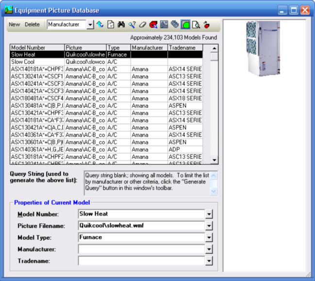
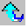
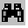
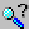
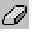
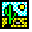

Equipment Picture Database (Tools Menu) |
  
|
Equipment Picture Database (Tools Menu) |
|
Icon:  . Keyboard Shortcut: ALT, T, Q
. Keyboard Shortcut: ALT, T, Q
Opens the Equipment Picture Database window, where you can manage a database of cooling and heating equipment model numbers and their associated pictures..Normally you will have several model numbers that use the same picture file, as illustrated below.

New: Starts a new entry in the database, allowing you to enter a new model number, picture filename and other information.
Delete: Deletes the currently selected model from the list. To delete several models at a time, first right click the ones you want to delete, then click the Delete button. To select several consecutive models for deletion, right click one model, then hold the Shift key down and right click another. All of the models in between will be selected.
Sort By: Determines which field in the database to sort by. Shown here sorted by Manufacturer name. Also see the description for the Reverse Sort button.

Reverse Sort: Toggles the sort direction between ascending and descending.Refresh List: Regenerates the list. Click this button if any display problems occur with the list.

Find Model In List: Opens a dialog that lets you type in a whole or partial model number to search for. After searching once, you can repeat the search by pressing F3.
Generate Query: Opens the Query Equipment Picture Database dialog so you can enter criteria by which to query the database. For example, if you only want to see models from a particular manufacturer, generate a query that includes that manufacturer's name.
Clear Query: Clears the criteria for the query and regenerates the full list.Import From Manufacturer Database: Opens the Import From Manufacturer Database dialog, which lets you select an Elite Software manufacturer database file to import picture file data from. Any models in the database that have their Picture Filename field filled in will be imported and added to the equipment picture database.

Merge: Merges the recently installed version of the master Equipment Picture Database file with your version of the database. This button is only enabled after you have installed an update to Rhvac that happens to have included a new version of this database or after you have installed a epdsetup.exe file. Note that file "EquipPic.new" will be present in your C:\Elite\Common folder when data is available for merging. When new data is available to be merged, the Merge Notification window will appear at program startup.Set Picture Filename For Multiple Models: Opens the Set Picture Filename For Multiple Units dialog that lets you select a filename to set for all of the models you selected. Note that this button is only available when you select more than one unit in the list (done by right clicking and Shift+right clicking).
Fit Image In Container (Toggle): Toggles the picture as being shown at its original size or reduced or expanded to just fit within the boundaries of the container. Note that this button also affects the size of the picture when printed using the Print Equipment Picture window (see below).
Print Equipment Picture: Opens the Print Equipment Picture window containing a print preview of the current model that you can print. Note that if the Fit Image In Container button is pressed down, the picture will be stretched to fill up the available space on the page. Otherwise, the picture is set to its original size and is centered on the page.
Regenerate Manufacturer List (for Manufacturer dropdown help): Regenerates the list of manufacturers shown on the dropdown help for the Manufacturer input on this window as well as the one on the Query Equipment Picture Database dialog.
Model Number: Specifies the model number of the current unit. When in query entry mode, you can enter a whole or partial model number to limit your search to models that include the text you enter.
Picture Filename: Specifies the filename of the picture that goes with the model number. Note that if the picture filename is located in the EquipPic folder it is not necessary to include the path in the filename. When in query mode, you can enter a whole or partial filename to limit your search to models that include the text you enter.
Model Type: Specifies the model type for the currently selected model. When in the query entry mode, you can enter a model type to limit your search to only models of that type.
Tradename: Specifies the tradename of the current model. When in the query entry mode, you can enter a tradename to limit your search to only include models with that particular tradename.
Manufacturer: Specifies the manufacturer of the current model. When in the query entry mode, you can enter a manufacturer name to limit your search to only include models made by that manufacturer.
Query String: If the current list was generated by a query that excluded some models, displays the query used to generate the list.
Custom Query: When checked, allows you to enter your own query string into the Query String input while in the query entry mode.
Model List: Displays the list of models and their picture filenames. Double click the list to edit the selected model.